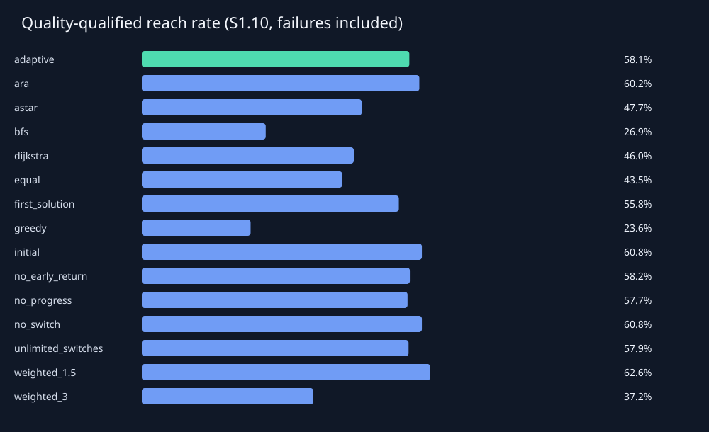
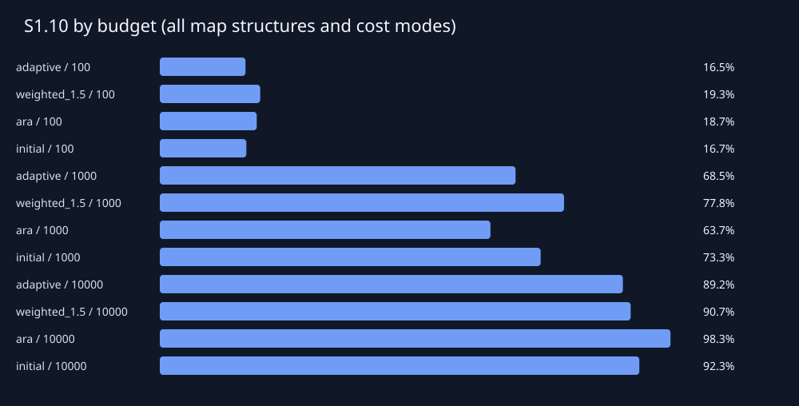
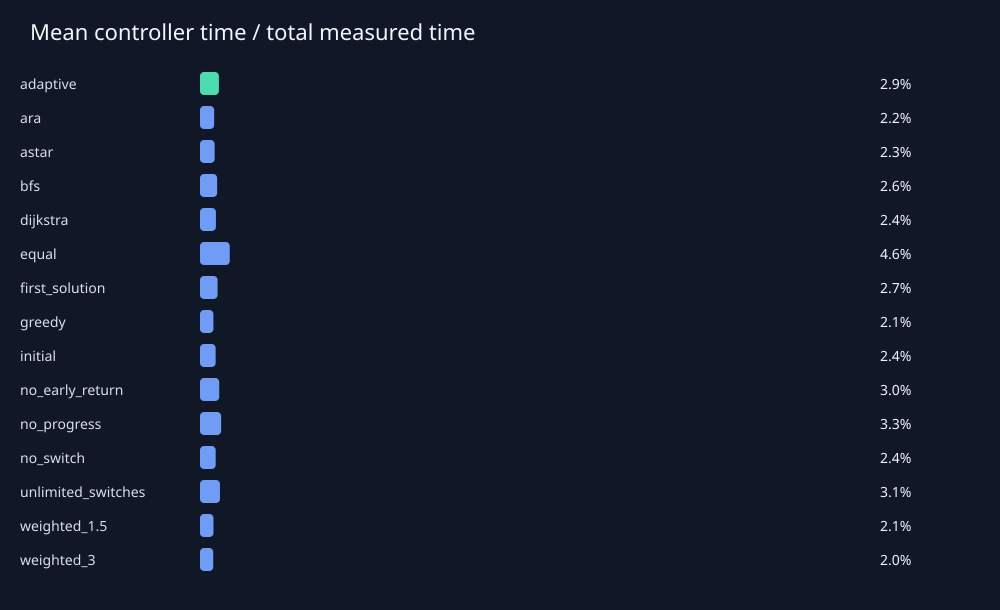

# 실험 결과 보고서 지도 720개, 지도–예산 조합 2160개, 실행 32400개. 검증 지도에서 선정하고 최종 평가 전에 고정한 단일 기준선: **weighted_1.5**. Sρ의 분모는 경로가 존재하는 지도–예산 조합 전체입니다. 예산 내 미발견도 실패로 포함하며, 경로 없는 지도는 별도 집계합니다. | 방법 | 도달률 | S1.05 | S1.10 | S1.25 | 성공 시 평균 C/C* | 평균 확장 | 평균 시간(ms) | |---|---:|---:|---:|---:|---:|---:|---:| | adaptive | 65.33% | 44.33% | 58.06% | 64.33% | 1.038 | 943.444 | 6.582 | | ara | 70.11% | 53.72% | 60.22% | 69.61% | 1.029 | 1074.145 | 8.593 | | astar | 47.72% | 47.72% | 47.72% | 47.72% | 1.000 | 1007.841 | 7.189 | | bfs | 46.00% | 26.44% | 26.89% | 29.56% | 1.197 | 1259.736 | 6.209 | | dijkstra | 46.00% | 46.00% | 46.00% | 46.00% | 1.000 | 1262.798 | 8.216 | | equal | 46.94% | 36.67% | 43.50% | 46.33% | 1.027 | 2140.564 | 14.160 | | first_solution | 65.33% | 40.06% | 55.78% | 64.17% | 1.047 | 649.481 | 5.115 | | greedy | 69.67% | 15.61% | 23.61% | 41.61% | 1.303 | 547.568 | 4.072 | | initial | 66.39% | 45.83% | 60.78% | 66.00% | 1.033 | 571.202 | 4.482 | | no_early_return | 65.33% | 47.11% | 58.17% | 64.39% | 1.033 | 1377.483 | 9.210 | | no_progress | 64.83% | 45.11% | 57.67% | 63.78% | 1.036 | 971.668 | 7.110 | | no_switch | 66.39% | 45.83% | 60.78% | 66.00% | 1.033 | 571.202 | 4.394 | | unlimited_switches | 64.83% | 45.33% | 57.89% | 63.78% | 1.036 | 1116.987 | 7.985 | | weighted_1.5 | 67.11% | 44.00% | 62.61% | 67.11% | 1.033 | 513.565 | 4.088 | | weighted_3 | 68.72% | 21.83% | 37.22% | 63.89% | 1.102 | 574.675 | 4.326 | ## 짝지은 비교 차이는 adaptive − 기준선입니다. S1.10 차이가 양수이면 적응형이 유리합니다. 신뢰구간은 지도 단위 95% bootstrap이며 같은 지도의 모든 예산 실행을 함께 재표집합니다. | 기준선 | ΔS1.10 | 95% CI | 공동 성공 수 | 공동 성공 품질 차이 | |---|---:|---|---:|---:| | ara | -2.17% | [-3.94%, -0.50%] | 1176 | 0.013 | | astar | 10.33% | [8.33%, 12.11%] | 825 | 0.022 | | bfs | 31.17% | [28.39%, 33.67%] | 798 | -0.172 | | dijkstra | 12.06% | [10.06%, 13.72%] | 798 | 0.021 | | equal | 14.56% | [12.83%, 16.11%] | 840 | -0.000 | | first_solution | 2.28% | [1.56%, 3.06%] | 1176 | -0.009 | | greedy | 34.44% | [31.33%, 37.11%] | 1174 | -0.267 | | initial | -2.72% | [-4.17%, -1.28%] | 1157 | 0.003 | | no_early_return | -0.11% | [-0.28%, 0.00%] | 1176 | 0.004 | | no_progress | 0.39% | [-0.78%, 1.67%] | 1134 | 0.004 | | no_switch | -2.72% | [-4.17%, -1.28%] | 1157 | 0.003 | | unlimited_switches | 0.17% | [-0.72%, 1.00%] | 1159 | 0.002 | | weighted_1.5 | -4.56% | [-6.44%, -2.89%] | 1147 | 0.004 | | weighted_3 | 20.83% | [18.22%, 23.33%] | 1176 | -0.062 | 이 실행에서 적응형의 S1.10은 검증 선정 기준선보다 **4.56%p 낮았습니다**. 이 결과만으로 일반적 우수성을 주장하지 않습니다. ## 측정 범위와 해석 - 최적 비용은 별도의 무제한 Dijkstra로 계산하며 실행 중 제어기에 전달하지 않았습니다. - 시간은 특징 계산, 전략 선택, 초기화, 전환, 복원 및 계측 비용을 포함합니다. 지도 생성·평가용 최적 비용 계산·화면 재생은 제외합니다. - 메모리 지표: retained state estimate; not process RSS. 추정치와 traced allocation peak는 RSS가 아닙니다. - 시간 제한은 협력적 검사입니다. 한 확장·초기화의 완료와 결과 정리에 따른 초과 시간을 기록하며, 마감 후 완료된 새 경로는 채택하지 않습니다. - seconds_without_controller는 측정된 제어 시간을 차감한 보조값입니다. 제어기 없이 재실행한 반사실적 성능을 뜻하지 않습니다. - 무전환 변형은 초기 선택만 유지합니다. no_progress는 지도 특징과 남은 예산만 사용하여 전환합니다. - no_early_return은 품질·정체 기반 조기 반환을 제거합니다. 모든 유용한 탐색기가 끝나거나 전환 한도에 도달하면 종료할 수 있습니다. - 전체 평균은 구성한 지도 분포에 의존합니다. 구조별 실제 밀도도 함께 기록했으며 밀도를 통제한 인과 효과를 주장하지 않습니다. - 세부 조건별 비교와 불리한 조건은 summary_by_condition.csv 및 paired_by_condition.csv에서 확인할 수 있습니다.